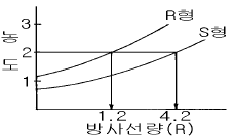
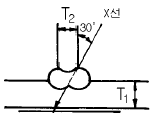

방사선비파괴검사기능사 (2002-04-07 기출문제)
1과목: 방사선투과시험법
1. 다음 중 비파괴검사에 대한 설명으로 올바른 것은?
- 미세한 표면균열 검출감도는 방사선투과검사가 가장 우수하다.
- 자분탐상시험에서는 선형자장보다 원형자장이 탈자하기 어렵다.
- 침투탐상시험에서는 결함의 폭이 깊이보다 클 경우에 검출감도가 높다.
- 와전류탐상시험을 이용하면 결함의 종류, 크기, 깊이를 정확히 판정할 수 있다.
(정답률: 알수없음)

2. 침투탐상시험시 과잉 침투액 제거에 대한 설명 중 옳은 것은?
- 수세성 침투액을 쓸 경우에는 침투시간 경과후 제거한다.
- 후유화성 침투액을 쓸 경우에는 유화제를 적용하기 전에 제거한다.
- 증기 세척기를 써서 제거한다.
- 용제제거성 침투액을 쓸 경우에만 제거한다.
(정답률: 알수없음)
3. 새로 도입한 3Ci의 Ir192선원이 1년후에는 얼마나 되겠는가? (단, Ir192의 반감기는 75일)
- 약 195.3mCi
- 약 102.9mCi
- 약 72.6mCi
- 약 60.5mCi
(정답률: 알수없음)
4. 산란 방사선의 양은 어떤 경우에 감소하는가?
- 입사 방사선의 에너지가 감소할 경우
- 산란각이 감소할 경우
- 방사선의 조사면적이 증가할 경우
- 입사 방사선의 에너지가 증가할 경우
(정답률: 알수없음)
5. 다음 중 비파괴시험이 아닌 것은?
- 전자유도시험
- 중성자투과시험
- 인장강도시험
- 누설자속시험
(정답률: 알수없음)
6. 방사선투과시험시 기하학적 불선명도에 영향을 주는 주요 원인의 설명으로 틀린 것은?
- 필름과 선원과의 거리
- 초점 또는 선원의 크기
- 필름의 입상성
- 필름과 시험체와의 거리
(정답률: 알수없음)
7. X선 발생장치에서 고유 여과 특성의 원인은?
- X선관의 창(Window)을 구성하는 재질
- 관전압 변동
- 초점에서 필름까지의 거리 변화
- 표적 물질의 종류
(정답률: 알수없음)
8. Ir-192의 γ선원에 대한 설명으로 틀린 것은?
- 강의 촬영범위는 대략 3∼75mm이다.
- 반감기는 약 75일이다.
- 에너지는 대략 0.2∼0.6MeV이다.
- 알루미늄에 대한 반가층은 약 0.85cm 이다.
(정답률: 알수없음)
9. 다음 중 투과도계에 관한 설명으로 잘못된 것은?
- 크게 유공형과 선형으로 나눌 수 있다.
- 가급적 선원 쪽 시험면 위에 배치한다.
- 시험유효 범위의 양 끝에 투과도계의 가는 선이 바깥쪽이 되도록 한다.
- 재질의 종류로는 유공형 투과도계가 선형에 비하여 제한을 받는다.
(정답률: 알수없음)
10. 방사선투과시험을 할 때 사용되는 투과도계는?
- 투과사진의 상질을 결정하는 기준으로 쓰인다.
- 투과사진의 농도차를 측정하는 기준으로 쓰인다.
- 투과사진의 농도를 보정하는데 쓰인다.
- 투과사진의 노출시간을 결정하는데 쓰인다.
(정답률: 알수없음)
11. 방사선투과시험의 원리에 대한 설명 중 틀린 것은?
- 방사선투과시험에는 X선과 감마선이 많이 사용되고 있다.
- X선 및 감마선은 시험체를 투과하는 성질이 있다.
- X선 및 감마선의 투과력은 시험체를 구성하는 원소와 두께에 따라 달라진다.
- 시험체에 방사선의 산란이 다를 경우 투과사진 상에는 농담(濃淡)이 되어 나타난다.
(정답률: 알수없음)
12. 다음 중 X-선 장비에서 노출 인자가 아닌 것은?
- 관전압
- 현상시간
- 선원-필름간 거리(SFD)
- 콘트라스트
(정답률: 알수없음)
13. 그림과 같이 200mA.sec의 노출로 R형 필름의 농도가 2.0 이면 S형 필름으로 같은 농도의 사진을 얻으려면 노출 조건은 어떻게 변하는가?

- 200 mA.sec
- 500 mA.sec
- 700 mA.sec
- 1000 mA.sec
(정답률: 알수없음)
14. 거리 3m, 15mA에 0.5분의 노출을 주어 얻은 사진과 동일한 사진을 얻기 위해 거리는 동일하고 노출시간을 1.5분으로 조건을 바꾸면 필요한 관전류는?
- 15mA
- 5mA
- 3mA
- 1mA
(정답률: 알수없음)
15. 방사선투과시험한 필름의 농도가 3.0일 때 다른 조건은 변화시키지 않고 농도를 2.0으로 하려면?
- 촬영시간을 단축한다.
- 촬영시간을 늘린다.
- 촬영시간을 2배로 한다.
- 촬영시간과는 관계없다.
(정답률: 알수없음)
16. 공업용 X선 필름의 성능 특징에 관하여 틀린 설명은?
- 저감도 필름은 관용도가 낮다.
- 저감도 필름으로는 높은 콘트라스트를 얻을 수 있다.
- 고감도 필름은 입상성이 좋아 정밀 시험에 적합하다.
- 형광 증감지용 필름은 미세한 결함의 검출에 적합하지 않다.
(정답률: 알수없음)
17. 현상된 필름의 기저 부분의 유제가 고르지 못한 주된 이유는?
- 현상액의 온도가 낮을 때
- 현상액의 온도가 높을 때
- 정착액의 강도가 약할 때
- 정착액의 강도가 강할 때
(정답률: 알수없음)
18. 다음 중 현상처리 과정에서 원인이 되어 생기는 인공결함과 형태가 맞게 짝지어진 것은?
- 구겨짐 표시 - 주변보다 낮은 농도의 초생달 형태
- 압흔 - 주위보다 낮은 농도 형태
- 정전기 표시 - 나무가지 형태의 검은 선
- 반점 - 뚜렷한 원형상의 반점 형태
(정답률: 알수없음)
19. 방사선투과시험시 필름을 수동현상할 때 최대효과를 얻기 위한 용액의 온도 범위는?
- 12℃ - 16℃
- 18℃ - 22℃
- 24℃ - 28℃
- 30℃ - 40℃
(정답률: 알수없음)
20. 다음 중 방사선 투과사진의 감도에 영향을 미치는 피사체 콘트라스트의 인자가 아닌 것은?
- 방사선 선질
- 필름의 종류
- 산란방사선
- 시험체의 두께차
(정답률: 알수없음)
2과목: 방사선안전관리 관련규격
21. 필름의 저장시 필름위 한 부분을 무거운 물건으로 압력을 주었더니 방사선사진 촬영후 현상시 인공 결함이 생겼다. 이 경우 나타날 수 있는 현상으로 적절한 인공 결함은?
- 초생달 무늬
- 안개 현상
- 누런 얼룩 현상
- 검은 얼룩점 무늬
(정답률: 알수없음)
22. 방사선투과사진 촬영시 필름의 양측에 밀착시켜 방사선 에너지를 유효하게 하는 것은?
- 계조계
- 밀도계
- 증감지
- 투과도계
(정답률: 알수없음)
23. γ선원으로 투과시험을 할 경우 두꺼운 시험체에 대해서 Ir-192보다는 Co-60 선원이 더 유리한 이유는?
- 에너지가 크므로
- 선량율이 크므로
- 가격이 저렴하므로
- 감광작용이 크므로
(정답률: 알수없음)
24. 방사선 발생장치를 장시간 사용하지 않고 보관할 때 적절한 조치 사항은?
- 방사창을 기름칠하여 둔다.
- 타게트를 분해, 방수처리하여 보관한다.
- 최소한 1개월에 한번 정도 예열한다.
- 35℃인 창고에 보관한다.
(정답률: 알수없음)
25. 다음 중 단강품에 주로 이용되지 않는 비파괴검사법은?
- 방사선투과검사
- 초음파탐상검사
- 침투탐상검사
- 자분탐상검사
(정답률: 알수없음)
26. 필름뱃지로 방사선 작업자의 저(低)에너지 X선 피폭선량을 측정할 때 가장 큰 오차의 원인이 되는 것은?
- 에너지 의존성
- 방향 의존성
- 잠상퇴행
- 온도 의존성
(정답률: 알수없음)
27. 방사선량의 단위중 정(正)또는 부(負)의 전기량이 공기 1 [kg]에 대하여 2.58x10-4쿨롬(coulomb)일 때 그것을 단위로 X선 또는 γ선량을 표시하는 것은?
- 1 R(렌트겐)
- 1 Sv(서베이)
- 1 Gy(그레이)
- 1 joule(줄)
(정답률: 알수없음)
28. 방사선 작업인의 피폭선량 측정에 적합하지 않는 측정기는?
- 포켓도시메타
- 필름뱃지
- GM 서베이메타
- 열형광선량계
(정답률: 알수없음)
29. 방사성 동위원소를 사용하는 작업실에서 핵종 미상의 동위원소를 엎질렀다. 표면 오염 여부를 측정하려면?
- Scintillation counter로 측정한다.
- Survey meter로 측정한다.
- Smear test를 한다.
- X2 - test를 한다.
(정답률: 알수없음)
30. 방사선 안전관리에 관한 법령에서 검사 또는 검진할 항목에 해당되지 않는 것은?
- 적혈구수
- 백혈구수
- 혈색소의 양
- 대장
(정답률: 알수없음)
31. 필름뺏지나 TLD를 사용할 때의 준수사항에 대한 설명 중 틀린 내용은?
- 뺏지는 고온에 가까이 하지 않아야 한다.
- 뺏지의 이상유무를 확인시 물로 씻어 본다.
- 뺏지에 손상이 있을 때 작업을 중지하여야 한다.
- 방사선 작업시 뺏지를 목과 허리사이의 작업복에 부착한다.
(정답률: 알수없음)
32. 동위원소 취급시 반감기란 중요한 특성인데 6반감기가 경과한 후 에너지의 강도는 초기 강도의 약 몇 % 정도로 떨어지겠는가?
- 2%
- 3%
- 6%
- 1%
(정답률: 알수없음)
33. KS B 0845에서 규정하는 강용접부의 제 2종 흠(결함)이 아닌 것은?
- 슬러그 말아넣음
- 용입 부족
- 융합 불량
- 수축공
(정답률: 알수없음)
34. 양면 개선된 알루미늄 T형 용접부를 KS D 0245 규격에 따라 방사선투과검사시 필요한 계조계의 종류는? (단, T1 : 6mm, T2 : 11mm)

- A형
- B형
- C형
- D형
(정답률: 알수없음)
35. 주강품의 방사선투과시험 방법을 규정한 KS D 0227에 의거 화상의 질이 A급인 경우 투과사진에서 시험부의 결함 이외의 부분에 대한 사진농도 범위는?
- 1.0 이상 3.5 이하로 함이 좋다.
- 0.5 이상 1.0 이하로 함이 좋다.
- 3.0 이상으로 함이 좋다.
- 0.5 이하로 함이 좋다.
(정답률: 알수없음)
36. KS 규격에서 4F 투과도계 선지름의 계열에서 선지름은 어떠한 관계를 이루고 있는가?
- 등비수열
- 등차수열
- 조화수열
- 계차수열
(정답률: 알수없음)
37. KS B 0845에 규정한 투과도계의 사용에 대한 설명으로 올바른 것은?
- 일반적으로 시험부 선원쪽의 표면 유효길이내 양끝부근에 각 1개를 놓는다.
- 투과도계의 가는 선이 시험체의 안쪽에 놓이도록 조치하여야 한다.
- 특별히 투과도계를 필름쪽에 놓을 때는 투과도계 각각의 부분에 B의 기호를 붙인다.
- 시험부 유효길이가 투과도계 나비의 5배 이상인 경우 중앙에 1개를 둘 수 있다.
(정답률: 알수없음)
38. 알루미늄 평판 맞대기 용접부의 방사선투과시험시 초점과 투과도계 사이의 거리는 원칙적으로 최소한 시험부 유효길이의 몇 배이상 인가?
- 2배
- 3배
- 5배
- 7배
(정답률: 알수없음)
39. 모재두께 10mm, 투과두께 13.7mm인 알루미늄 맞대기용접부를 KS D 0242에 의거하여 방사선투과검사할 때 요구되는 계조계 종류와 비교해야 할 두께로 올바른 것은?
- Ⅱ형의 3mm와 Ⅰ형의 4mm부분
- Ⅱ형의 4mm와 Ⅱ형의 5mm부분
- A형의 4mm와 A형의 5mm부분
- D3형의 3mm와 D3형의 4mm부분
(정답률: 알수없음)
40. KS D 0242에서 알루미늄 용접부의 투과사진을 등급분류 할 때 등급 분류에 포함할 결함이 아닌 것은?
- 균열
- 용입불량
- 언더컷
- 융합불량
(정답률: 알수없음)
3과목: 금속재료일반 및 용접 일반
41. KS D 0242에서 모재 두께가 38㎜이며 양쪽 블록집이 있는 알루미늄 평판맞대기 용접부를 방사선투과검사하고자 한다. 이 때 요구되는 투과도계 식별도는 몇 % 이하이어야 하는가?
- 2.0%
- 1.6%
- 1.25%
- 1%
(정답률: 알수없음)
42. 상온에서 비중이 약 1.74인 금속은?
- Zn
- Hg
- Sn
- Mg
(정답률: 알수없음)
43. 강 자성체에 속하지 않는 금속은?
- 철
- 코발트
- 구리
- 니켈
(정답률: 알수없음)
44. 금속의 일반적인 특성을 설명한 것 중 틀린 것은? (수은은 제외)
- 고체상태에서 결정을 구성한다.
- 양도체이다.
- 금속광택을 가진다.
- 전연성이 없다.
(정답률: 알수없음)
45. 금속의 가공경화를 가장 옳게 설명한 것은?
- 경도 및 인장강도가 증가하고 연신율이 저하 한다.
- 경도 및 인장강도가 저하하고 연신율이 증가 한다.
- 점성 및 취성이 크며 기계 가공성이 아주 양호하다.
- 취성 및 인성이 증가하고 연신율이 증가한다.
(정답률: 알수없음)
46. 이온화 경향이 가장 큰 것은?
- Cr
- K
- Sn
- H
(정답률: 알수없음)
47. 현미경 조직시험을 위한 일반적인 시료준비 순서는?
- 시료채취 → 부식 → 연마
- 시료채취 → 연마 → 부식
- 연마 → 시료채취 → 부식
- 부식 → 시료채취 → 연마
(정답률: 알수없음)
48. 샤르피 충격시험기에 의해 측정하는 시험으로 옳지 않은 것은?
- 파면율
- 충격값
- 피로한도
- 흡수에너지
(정답률: 알수없음)
49. 주철중에 나타나는 탄소량은 주로 어떤 형태 인가?
- 흑연 + 화합탄소
- 인 + 흑연
- 망간 + 화합탄소
- 텅스텐 + 화합탄소
(정답률: 알수없음)
50. 철-탄소계 평형 상태도에서 탄소량을 약 0.8%(S점)함유한 강은?
- 림드강
- 공석강
- 케프트강
- 자석강
(정답률: 알수없음)
51. 공구강의 구비조건으로 옳지 않은 것은?
- 열처리 난이성이 클 것
- 내마멸성이 클 것
- 열처리변형이 적을 것
- 상온 및 고온에서 경도가 클 것
(정답률: 알수없음)
52. 구리에 납 30 - 40%를 가한 합금은?
- 켈밋
- 에드미럴티 포금
- 델타 메탈
- 콜슨
(정답률: 알수없음)
53. 원자로에서 생산되고 있는 플루토늄의 원소기호는?
- Th
- Pu
- Cn
- Us
(정답률: 알수없음)
54. AW-200 인 용접기로, 무부하 전압 70V, 아크 전압 30V 인 교류 용접기의 역률과 효율은 얼마 정도나 되겠는가? (단, 내부 손실은 3kW로 한다.)
- 역률 60.8 %, 효율 56.2 %
- 역률 56.2 %, 효율 60.8 %
- 역률 64.3 %, 효율 66.7 %
- 역률 66.7 %, 효율 64.3 %
(정답률: 알수없음)
55. 가스용접 작업 중 불꽃에 산소의 양이 많게 될 경우 발생하는 결과와 가장 관계가 깊은 것은?
- 용접부에 기공이 생긴다.
- 아세틸렌 소비가 많아진다.
- 용접봉의 소비가 많아진다.
- 용제의 사용이 필요없게 된다.
(정답률: 알수없음)
56. 응력제거 열처리법 중 노내 및 국부 풀림의 유지 온도와 시간으로 가장 적당한 것은? (단, 판두께 25㎜의 보일러용 압연강재이다.)
- 유지온도 400± 25℃, 유지시간 1시간
- 유지온도 400± 25℃, 유지시간 2시간
- 유지온도 625± 25℃, 유지시간 1시간
- 유지온도 625± 25℃, 유지시간 2시간
(정답률: 알수없음)
57. 윈도우즈98에서 시스템 도구 메뉴에서 처리할 수 없는 기능은?
- 디스크 검사
- 디스크 조각 모음
- 디스크 정렬
- 디스크 정리
(정답률: 알수없음)
58. 중앙처리장치에 속하는 것으로만 짝지워진 것은?
- 기억장치, 제어장치
- 연산장치, 입력장치
- 기억장치, 입력장치
- 제어장치, 연산장치
(정답률: 알수없음)
59. 인터넷 접속 방식에서 모뎀을 이용해 접속하지만 자신의 PC가 인터넷에 직접 접속되는 것과 같은 효과의 접속 방식은?
- LAN 접속
- 터미널 접속
- IPX
- SLIP/PPP 접속
(정답률: 알수없음)
60. 컴퓨터에서 속도가 빠르기 때문에 캐시 메모리로 주로 쓰이는 것은?
- DRAM
- SRAM
- PROM
- EPROM
(정답률: 알수없음)